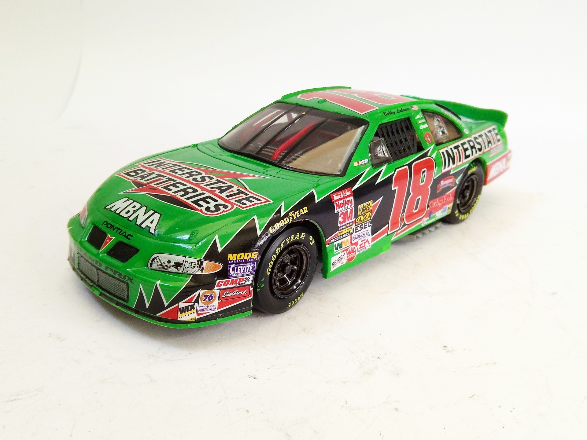
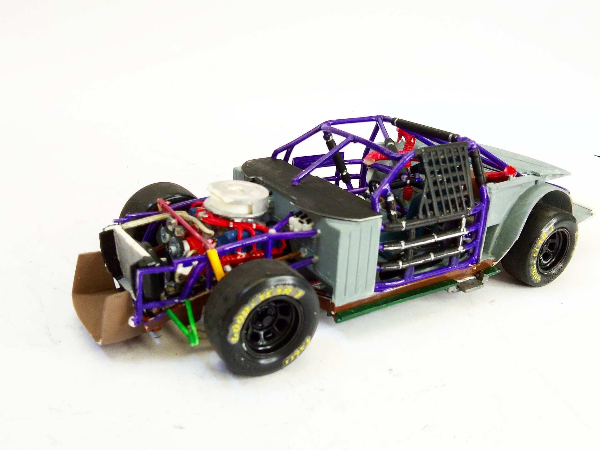
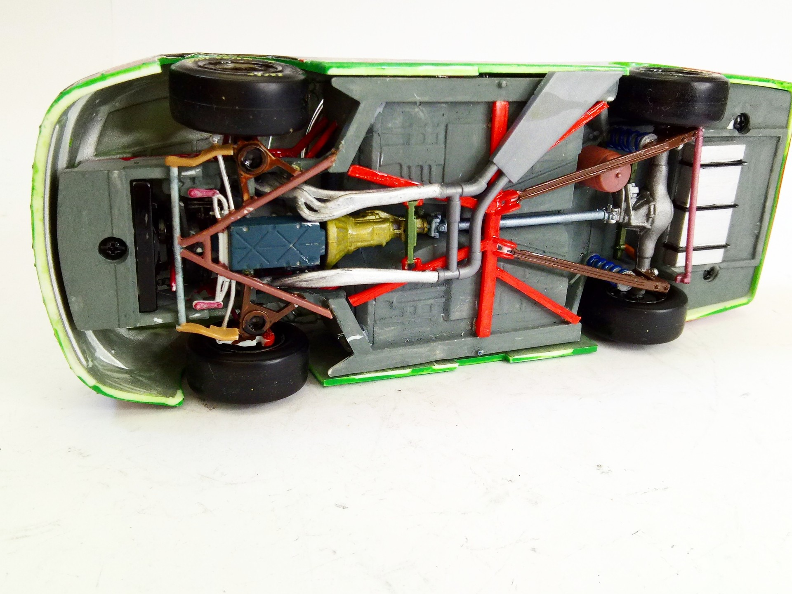
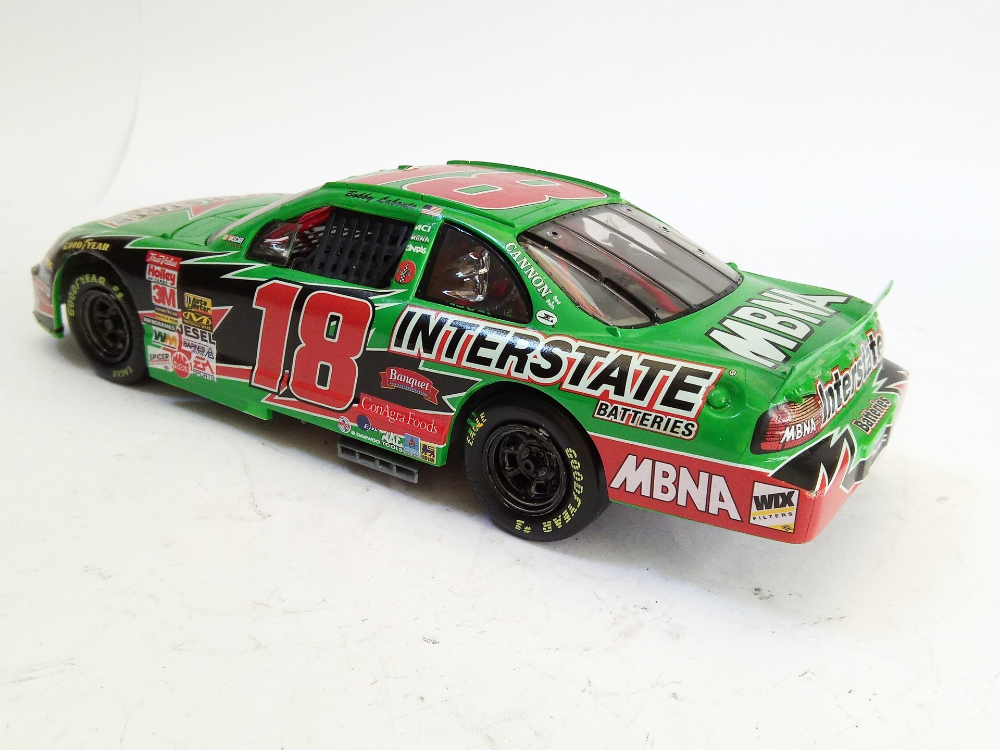

Auto e veicoli stradali · scale model archive
Pontiac Grand Prix Interstate Batteries
Pontiac Grand Prix Interstate Batteries — Kit: Revell, Scale: 1/25. Driver Bobby Labonte NASCAR 1999 #1/25 #Revell

Photo gallery



English description
Driver Bobby Labonte NASCAR 1999
#1/25 #Revell
Descrizione italiana
Pilota: Bobby Labonte NASCAR 1999.